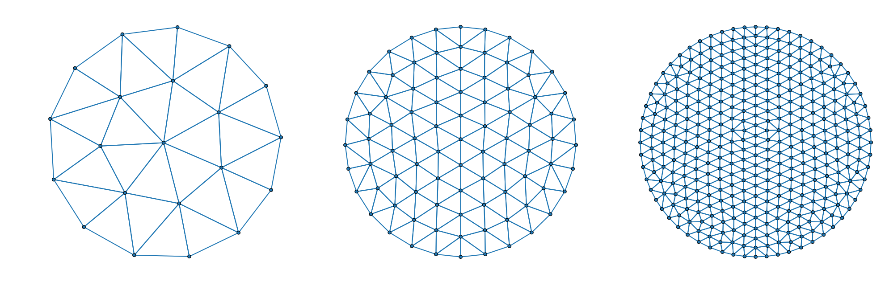
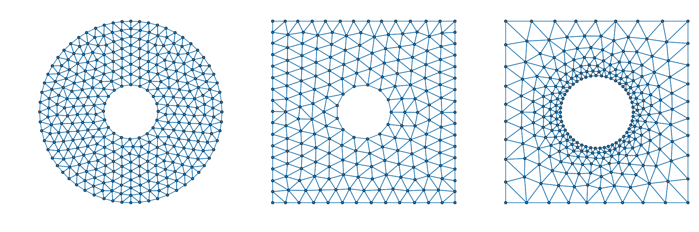
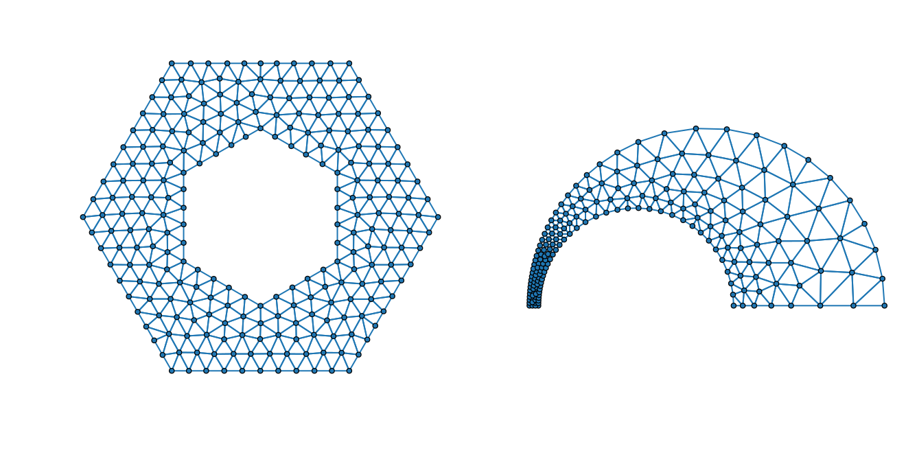
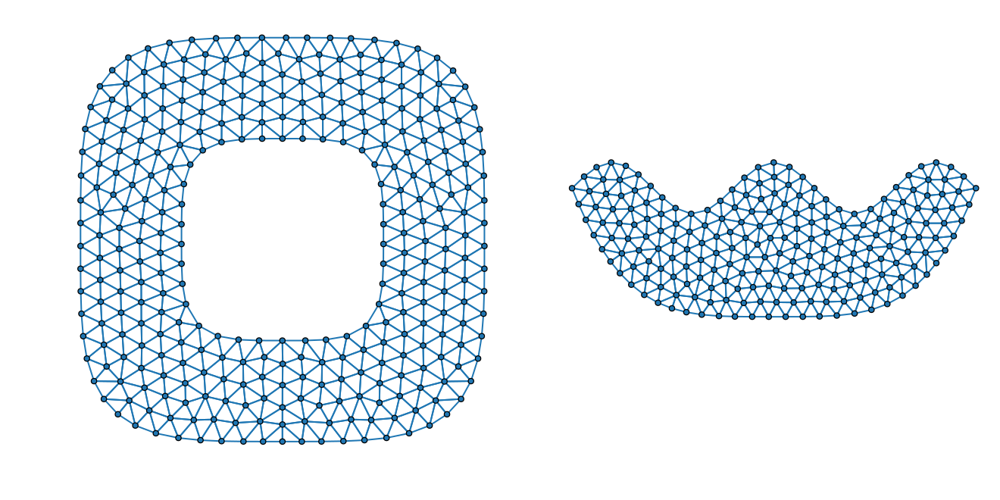

Examples
These examples are derived from the original DistMesh paper by Persson & Strang. [1]
Increasing discretization
The initial element size parameter h0 and the desired element size distribution h(x) control the level of mesh discretization.
d = Circle([0.0, 0.0], 1) # create signed distance function
h = x -> 1.0 # element-size distribution
bounds = [-1 -1; 1 1] # bounds for initial node distributino
h0s = [0.4, 0.2, 0.1] # initial element sizes
meshes = [Mesh(d, h, h0, bounds) for h0 ∈ h0s]
Combining regions
The regions represented by signed distance functions can easily be combined by taking unions, intersections and differences. In practice this is done by taking the minimum and maximum of a collection of signed distance functions
\[\begin{aligned} (d_1 \cup d_2)(x) &= \min \{ d_1(x), \, d_2(x) \},\\ (d_1 \cap d_2)(x) &= \max \{ d_1(x), \, d_2(x) \},\\ (d_1 \\ d_2)(x) &= \max \{ d_1(x), \, -d_2(x) \} \end{aligned}\]
In practice, you can use the operators ∪, ∩ and setdiff to combine signed distance functions.
Circular annulus,
c_outer = Circle([0.0, 0.0], 1)
c_inner = Circle([0.0, 0.0], 0.3)
d = setdiff(c_outer, c_inner)
h = x -> 1.0
h0 = 0.1
bounds = [-1 -1; 1 1]
mesh1 = Mesh(d, h, h0, bounds)Square with a hole,
square = Rect(-1, 1, -1, 1)
hole = Circle([0.0, 0.0], 0.3)
d = setdiff(square, hole)
h = x -> 1.0
h0 = 0.15
bounds = [-1 -1; 1 1]
fixed_nodes = [-1 -1 1 1; -1 1 -1 1]
mesh2 = Mesh(d, h, h0, bounds; fixed_nodes)Square with a hole and adaptive element sizing,
square = Rect(-1, 1, -1, 1)
hole = Circle([0.0, 0.0], 0.4)
d = setdiff(square, hole)
h = x -> min(0.2 + norm(x) - 0.4, 1)
h0 = 0.05
bounds = [-1 -1; 1 1]
fixed_nodes = [-1 -1 1 1; -1 1 -1 1]
mesh3 = Mesh(d, h, h0, bounds; fixed_nodes)
Complex geometries & adaptive element sizes
Making hexagons,
hexagon = (;l, ϕ0) -> Polygon(
stack((l * cos(ϕ), l * sin(ϕ)) for ϕ ∈ ϕ0 .+ range(0, 2π, 7)[begin:end-1])
)
outer_hexagon = hexagon(l=1.0, ϕ0=0)
inner_hexagon = hexagon(l=0.5, ϕ0=π/6)
d = setdiff(outer_hexagon, inner_hexagon)
h = x -> 1
h0 = 0.1
bounds = transpose(stack(extrema(outer_hexagon.nodes; dims=2);dims=1))
fixed_nodes = inner_hexagon.nodes
mesh1 = Mesh(d, h, h0, bounds; fixed_nodes)Adapting element sizes to geometry,
upper_half_plane = x -> -x[2]
d1 = Circle([0, 0], 1)
d2 = Circle([-0.4, 0.0], 0.55)
d = setdiff(d1, d2) ∩ upper_half_plane
h1 = x -> 0.15 - 0.2d1(x)
h2 = x -> 0.06 + 0.2d2(x)
h3 = x -> (d2(x) - d1(x)) / 3
h = x -> min(h1(x), h2(x), h3(x))
h0 = 0.05 / 3
bounds = [-1 0; 1 1]
fixed_nodes = [
-1.0 -0.95 0.15 1.0
0.0 0.00 0.00 0.0
]
mesh2 = Mesh(d, h, h0, bounds; fixed_nodes)
Implicit geometries
Meshing super-ellipses,
d = setdiff(
ImplicitRegion(x -> norm(x, 4) - 1),
ImplicitRegion(x -> norm(x, 4) - 0.5)
)
h = x -> 1
h0 = 0.1
bounds = [-1 -1; 1 1]
mesh1 = Mesh(d, h, h0, bounds)Weird implicit regions,
d = ImplicitRegion(x -> x[2] - cos(x[1])) ∩ ImplicitRegion(x -> -x[2] + 5((2 * x[1] / (5π))^4 - 1))
h = x -> 1
h0 = 0.6
bounds = [-5π/2 -5; 5π/2 1]
fixed_nodes = [-5π/2 5π/2; 0 0]
mesh2 = Mesh(d, h, h0, bounds; fixed_nodes)
All together now!
All of these techniques can be combined to create the mesh of your dreams, 😴❤️❤️
r = norm([-4, 0] - [1.0, 0.5])
ϕ = atan(1.5, 5)
d1 = Polygon([
-4.0 1.0 1.0 0.0 1.0 1.0
0.0 1.5 0.5 0.0 -0.5 -1.5
]) ∩ Circle([-4, 0], r)
d2 = Circle([-1.0, 0.0], 0.5)
d = setdiff(d1, d2)
h1 = x -> clamp(0.7norm(x), 0.1, 0.8)
h2 = x -> 0.2 + d2(x)
h = x -> min(h1(x), h2(x))
h0 = 0.03
bounds = [-4 -1.5; 1 1.5]
fixed_nodes = stack([
[-4.0, 0.0],
[1.0, 0.5],
[1.0, -0.5],
[0.0, 0.0],
[r * cos(ϕ) - 4, r * sin(ϕ)],
[r * cos(ϕ) - 4, -r * sin(ϕ)]
])
mesh = Mesh(d, h, h0, bounds; fixed_nodes)
References
[1] Persson, P. O., & Strang, G. (2004). A simple mesh generator in MATLAB. SIAM review, 46(2), 329-345.